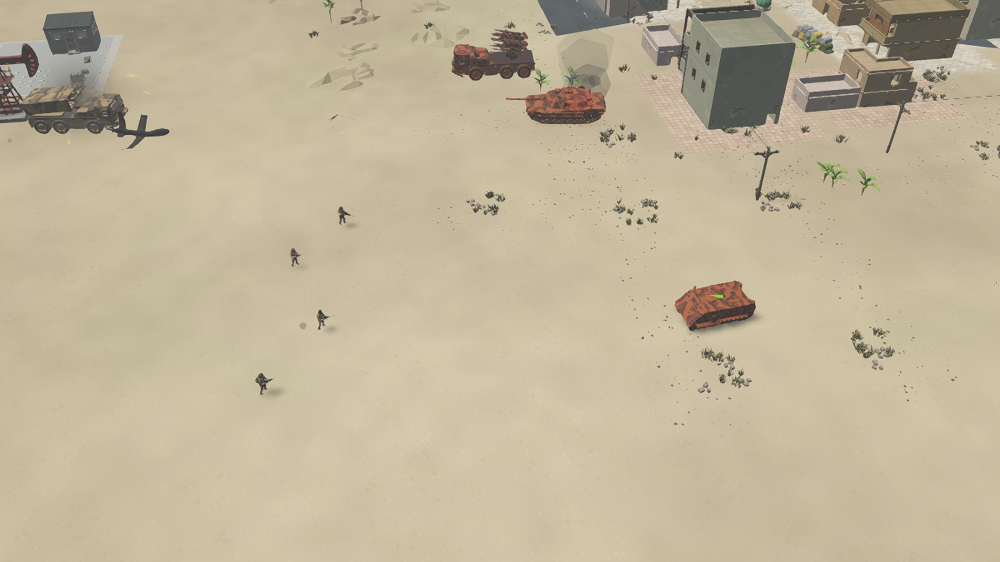
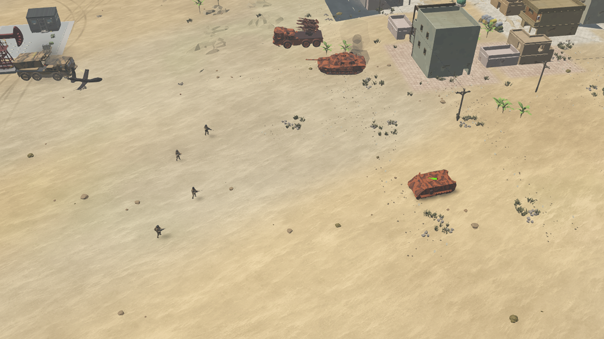

Desert ground in S002
Native gameplay camera · 1600 × 900 · Seed 104731


In motion
Both runs used the same staged encounter in the macOS Unity Editor. All 2,097,152 baked primary cells matched for height, movement mask, flags and surface type. The surface fingerprint was 28A735F2812689B3 in both runs.